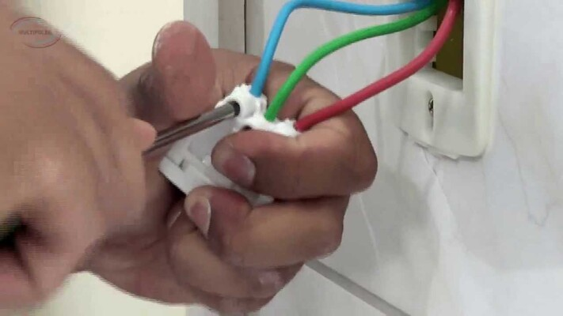

Como instalar tomada simples e dupla
Veja como realizar este trabalho com segurança

Quem não tem o costume de trabalhar com fiação elétrica precisa ter muito cuidado ao fazer alguma instalação ou ajuste.
Para instalar uma tomada com segurança, é preciso seguir vários passos, sendo que o modelo de tomada também influencia nesse momento.
Portanto, se você quiser aprender como realizar esse processo de modo correto para garantir a segurança e evitar problemas na sua rede elétrica, confira os próximos tópicos.
Como instalar tomadas com segurança
O primeiro passo que você deve fazer para ter segurança com uma tomada é desligar os aparelhos que estiverem ligados.
Depois, precisa desativar a chave geral e os disjuntores. Esse passo evita que você queime os aparelhos e garante a sua segurança na hora de instalar a nova tomada.
Os dias de chuva, tempestades e raios podem gerar descargas elétricas. Portanto, para se ter segurança com a tomada, evite fazer essa ação quando o tempo estiver desse jeito. Assim como também é importante tomar cuidado com o excesso de umidade, já que também pode gerar curtos-circuitos.
Por último, é recomendado que você utilize luvas, sapato de borracha e equipamentos com cabos elásticos, para não ter risco de levar choque e gerar acidentes. Isso é recomendado principalmente se a sua fiação for antiga ou se a rede elétrica estiver irregular.